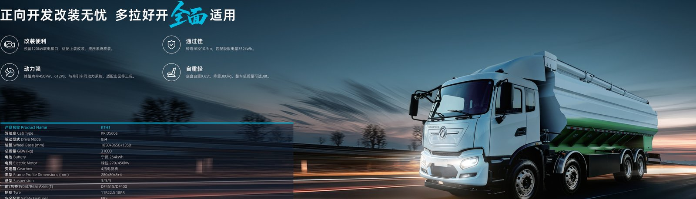

Financing an electric truck fleet is no longer a niche exercise, because green bonds and sustainability-linked loans now price capital below conventional vehicle debt. A Dongfeng EV truck such as the TE8L electric tractor qualifies for these instruments when the buyer documents emissions savings, which can cut the effective interest rate by one to two points. This guide compares the structures overseas fleet buyers actually use.
A green bond is debt earmarked for environmentally beneficial assets, and electric trucks fit the use-of-proceeds test when the issuer reports avoided CO2. Fleet operators issue or subscribe to green bonds through a bank, then allocate the funds to Dongfeng EV truck purchases and report the emissions saved each year. Because the TE8L tractor with its 282 to 510 kW LvKong motor replaces a diesel prime mover, the avoided tonnes are large enough to satisfy most green bond frameworks without creative accounting.
The advantage is price. Green bonds often clear at a lower yield than vanilla notes because institutional demand outstrips supply, and that saving flows to the fleet as a cheaper truck loan. Buyers in the South Africa electric truck market have used green bonds to fund port and logistics fleets where diesel air quality rules are tightening in major hubs.
A sustainability-linked loan (SLL) ties the interest rate to a key performance indicator, usually a fleet emissions or electrification target. Hit the target and the margin steps down; miss it and the rate rises. The table below contrasts the two instruments so a buyer can choose the right fit for an electric truck rollout.
| Feature | Green bond | Sustainability-linked loan |
|---|---|---|
| Use of proceeds | Ring-fenced to EVs | General, KPI-linked |
| Rate driver | Market green premium | Fleet KPI achievement |
| Reporting | Annual CO2 avoided | KPI certificate |
| Best for | Large single issuance | Phased fleet growth |
| Typical saving | 1-2 points | 0.5-1.5 points |
For a buyer scaling from five to fifty trucks, the SLL often wins because the KPI can step with each TE8L electric tractor added, keeping the incentive aligned with actual deployment rather than a one-time raise.
Leasing moves the battery risk off the balance sheet, which matters because the 600 kWh pack on a heavy tractor is a large line item. The list below shows the lease paths overseas buyers use to keep cash free for operations.
Battery-as-a-service deserves attention. By leasing the 336 to 600 kWh pack, a fleet converts a $45k to $180k capital block into an operating cost, and the 8-year or 4,500-cycle warranty transfers to the lessor, simplifying the asset on your books. This is especially useful where local banks will not lend against a pack they cannot repossess easily.
Lenders want proof the electric truck pays back, so prepare a total-cost-of-ownership model that shows diesel displaced per vehicle. The TE8L tractor's 330 to 350 km range on a 600 kWh pack and its 5 to 6 minute battery swap option support high daily utilization, which strengthens the repayment case. Include the FOB price band, the charging infrastructure cost and the expected energy saving in the submission.
Buyers in Africa and Asia should also show a route profile. A tractor running fixed port shuttles presents lower risk than one on open long-haul, and lenders price that difference. The South Africa electric truck market has mature transport-finance houses that already understand these profiles, which shortens approval for a Dongfeng EV truck fleet.
With green or SLL pricing, the effective cost of a Dongfeng EV truck can fall close to a diesel truck's sticker once fuel and maintenance savings are netted. A TE8L tractor removing diesel at about $0.12 per kWh equivalent versus diesel at about $1.20 per liter narrows the gap within two to three years, after which the electric truck is outright cheaper per kilometer. The financing structure mainly decides how much capital you tie up in the meantime.
Present the financing package alongside the vehicle quote so the lender sees the full picture. The export desk can supply the specification sheet, the warranty terms and the expected energy profile, which together let a bank underwrite the electric truck on its operating merits rather than treating it as an unproven asset.
A fleet issuer starts with a framework that names electric trucks as an eligible use of proceeds, then sizes the raise to the planned Dongfeng EV truck intake over the next 12 to 24 months. The TE8L tractor's displacement of diesel becomes the measured output, reported annually as tonnes of CO2 avoided. Investors accept a lower yield because the bond is green, and the saving passes to the fleet as cheaper capital. The export desk supplies the spec sheet and the expected energy profile so the framework's numbers are defensible to the second-party reviewer.
Lenders underwrite on evidence, so build the CO2 model from the route, not the brochure. A TE8L tractor on fixed port shuttles with a 600 kWh pack and 330 to 350 km range per charge displaces a predictable volume of diesel, and that figure anchors both the green bond report and the SLL key performance indicator. Include the charging energy at about $0.12 per kWh equivalent versus diesel at about $1.20 per liter, and the avoided tonnes fall out of the model cleanly. Keep the data per vehicle so the loan can step as the TE8L electric tractor fleet grows.
Beyond bonds and SLLs, buyers in the South Africa electric truck market can tap development-bank green lines and port authority co-funding that favor zero-emission freight. In Asia, export-credit agencies increasingly wrap electric truck purchases in preferential terms because the vehicles support national air-quality targets. Battery-as-a-service sits well with these programs, since it converts a large pack cost into an operating line that fits public-sector budgeting. Map the local options before you choose the instrument, because the cheapest capital is usually the one aligned with a published decarbonization mandate.
Bring the Dongfeng EV truck spec, the route profile and the CO2 model to the first meeting, because banks price on evidence, not enthusiasm. A TE8L tractor with a 600 kWh pack and 330 to 350 km range per charge presents a stable utilization case, which lowers the perceived risk and the margin. Ask specifically for green or SLL pricing, confirm whether battery-as-a-service improves the covenant, and compare the all-in cost against a vanilla truck loan so the saving from the electric truck is visible on one page.
Start with a total-cost model, then approach a green-bond desk or an SLL lender with the Dongfeng EV truck spec in hand. Choose battery-as-a-service if capital is tight, or a residual-value lease if you want a clean exit. The TE8L electric tractor is finance-ready, and the export team can provide the CO2 avoidance figures your green instrument requires. Contact Shaanxi Fenghan Trading for a financed quote structured for your market.
Ready to electrify your fleet? Contact Shaanxi Fenghan Trading — authorized Dongfeng EV truck exporter. WhatsApp: +86 153 1943 1311 | Email: sales@fenghan-trade.com | dongfengevtrucks.com
🌐 Our Network: Fenghan Trade (SAGMOTO/SHACMAN Truck Export) · heavy duty trucks export China